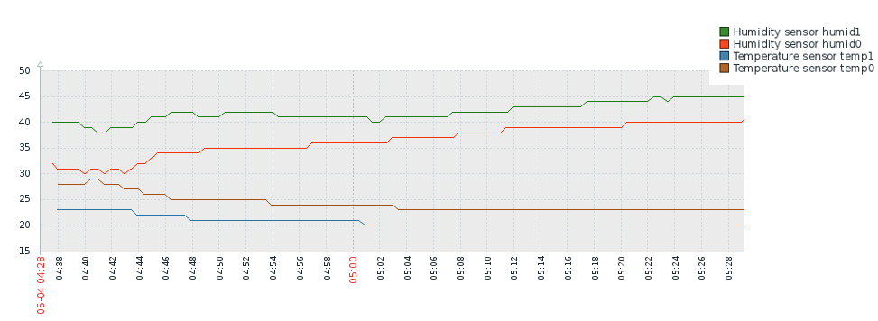

Monitoring teploty a vlhosti v serverovně
Cíle
- Zvýšit bezpečnost našich serverů
- Ochrana proti přehřátí
- Varování při vniku vody
- Hlídání zapnuté klimatizace
- Nový Quanti produkt pro firmy
Hardware
- Raspberry Pi
- Arduino
- Měřiče teploty a vlhkosti
- Display aktuálních stavů
- Senzor vody vlastní konstrukce
Software
- C++ pro Arduino
- Raspbian pro Raspberry pi
- Python pro čtení údajů z Arduina
- MariaDB pro ukládání výsledků
- Java spring pro vystavení výsledků
- Zabbix pro monitoring výsledků
Technické překážky
- Pomalá SD karta na Raspberry - MariaDB in memory
- Špatná dokumentace k součástkám - použití multimeteru
- Problémy s napájením Raspberry pi - silnější nabíječka
- Komplikace s kabely
Výsledky
- Úspěšně instalováno v serverovně
- Úspěšně monitorováno v Zabbixu
- Vytvořen rozšiřitelný a škálovatelný systém
- Prekvapivé zjištění vztahu vlkosti a zapnuté klimatizace
- Potíže s protokolem pro ovládání klimatizace

Možnosti do budoucna
- Výměna pomalé SD card storage za rychlejší
- Napojení na klimatizaci přes IR ovládání
- Webová stránka k propagaci produktu